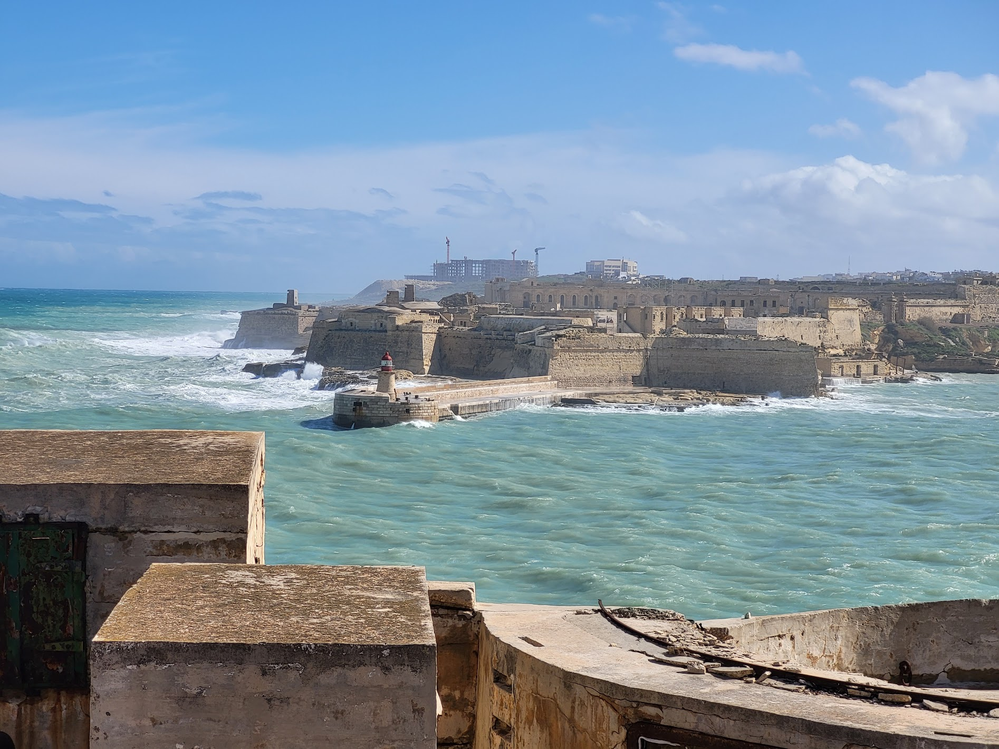
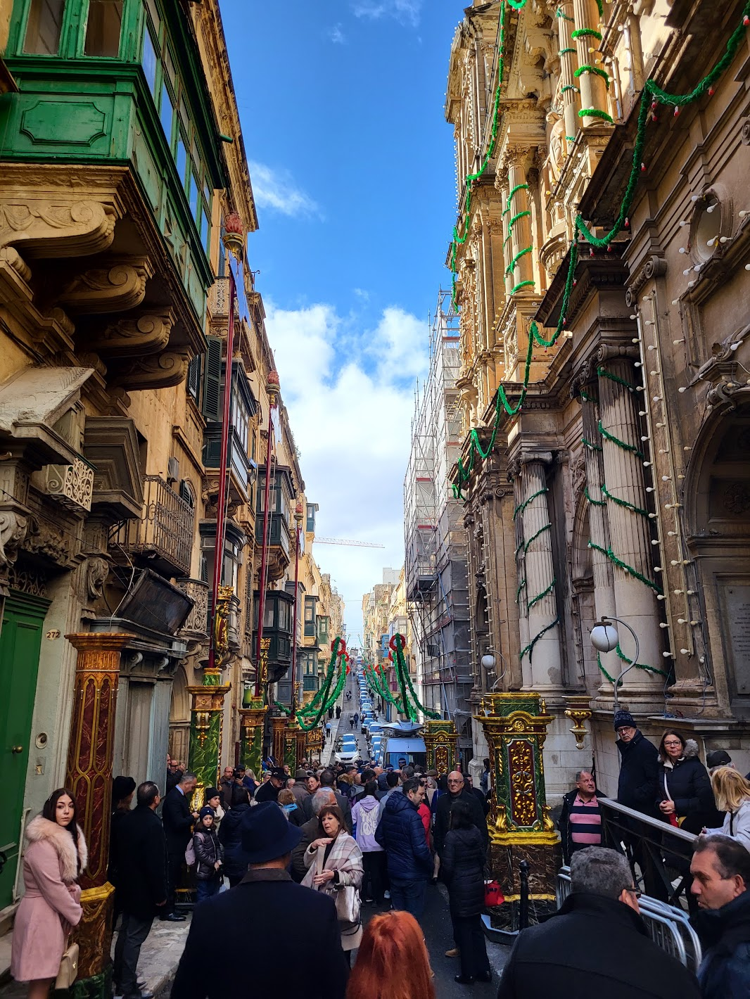
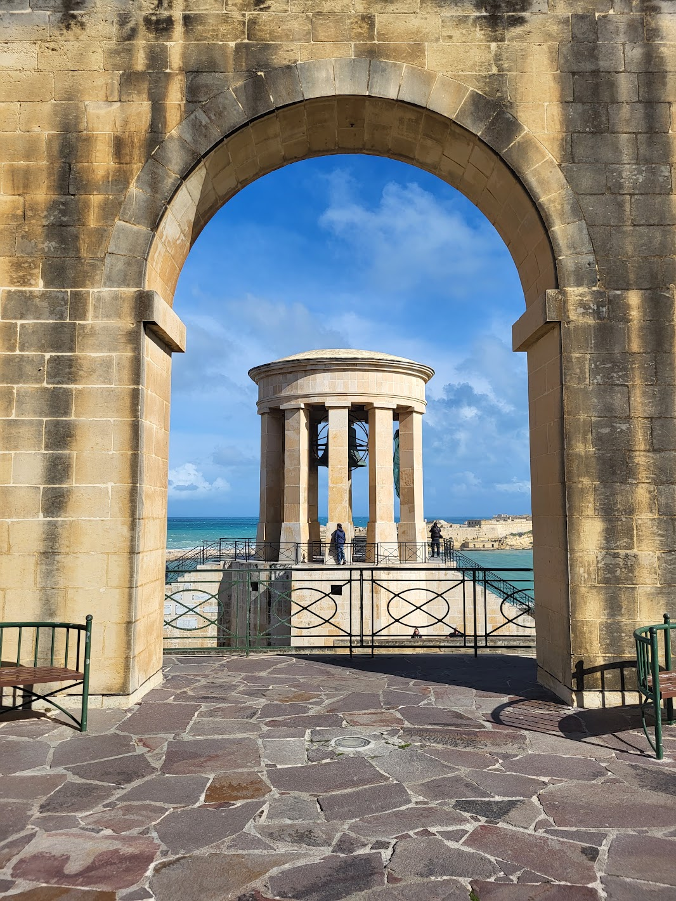
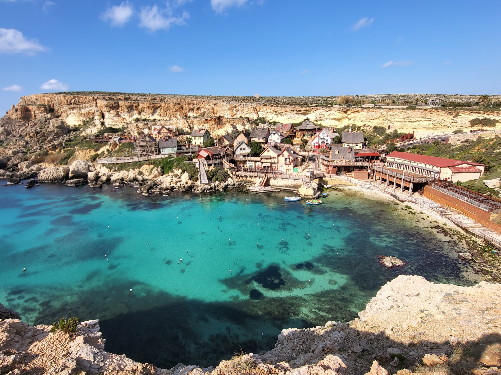
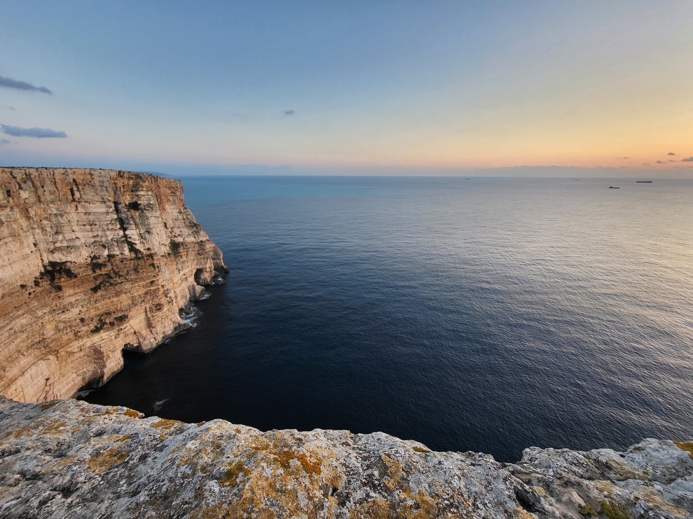
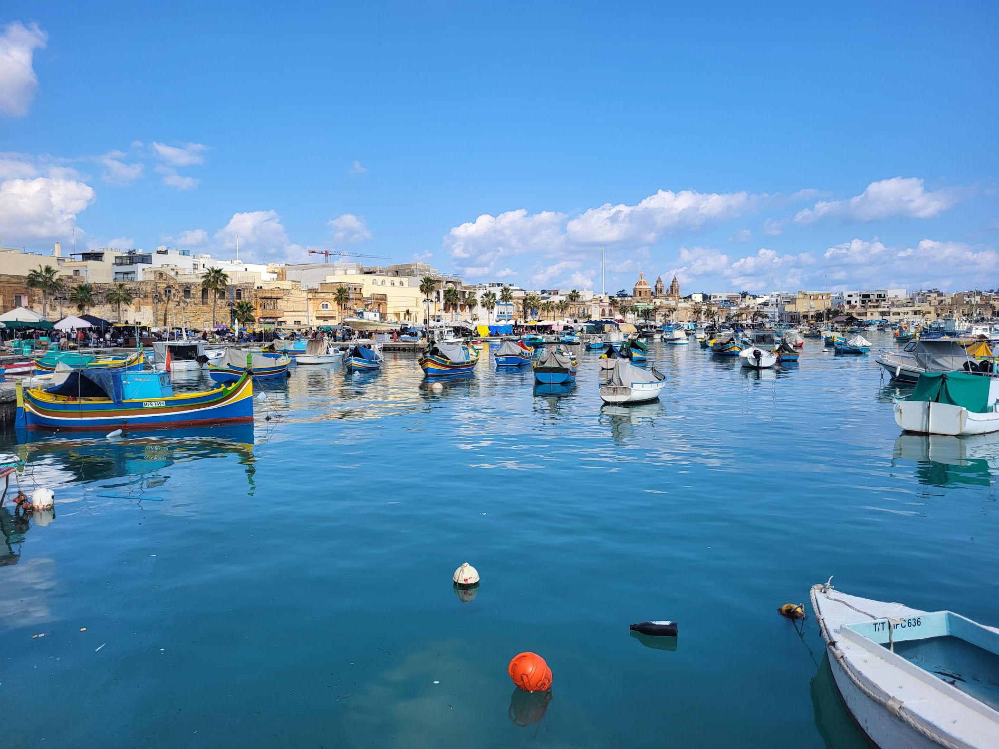
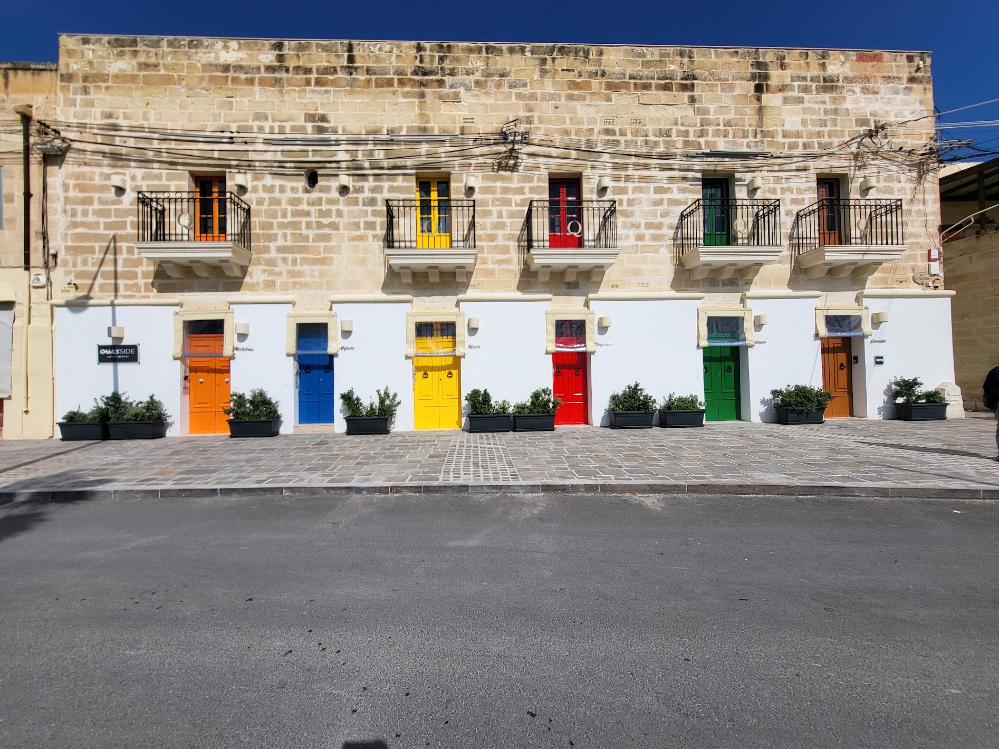
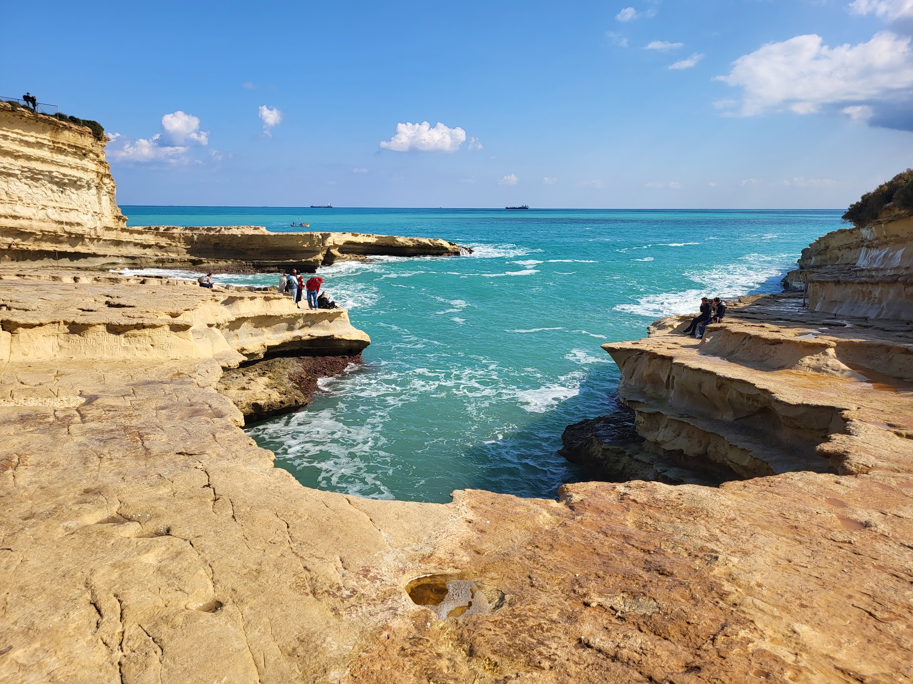
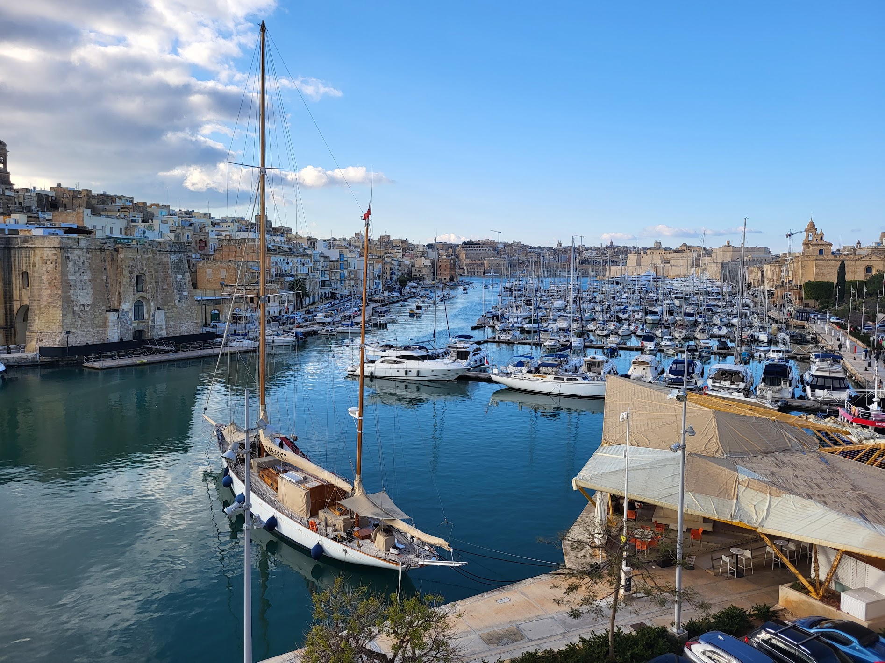

Zwiedzone miejsca
- Valetta
- Blue Grotto
- Ghar Lapsi
- Mdina
- Rabat
- wioska Popeye (dosłownie tylko zobaczona - z zewnątrz)
- Red Tower
- klify Ta’ Ċenċ
- Azure Window (a raczej to, co z niego zostało)
- kościół Ta'Pinu
- Marsaxlokk
- basen św. Piotra
- Marsaskala
- Vittoriosa (Birgu)
- Senglea
Czas wycieczki: 3 dni
Skład osobowy: 4 dorosłych
Całkowity koszt na osobę: 1600 PLN/osobę
Planując wycieczkę na Maltę długo zastanawialiśmy się, czy wynająć samochód czy też lepiej skorzystać z komunikacji publicznej (która jest podobno bardzo dobrze rozwinięta). Dużym minusem była nasza obawa przed ruchem lewostronnym, ale finalnie jednak przeważyła dużo większa mobilność w przypadku wynajęcia samochodu. Dodatkowo nie chcieliśmy tracić czasu na czekanie na przystankach - i jak się finalnie okazało, to była bardzo dobra decyzja, bo w dwóch miejscach odbiliśmy się od zamkniętych drzwi, więc szybko mogliśmy ruszyć do następnych punktów. Wycieczkę oceniam bardzo pozytywnie: pomocni lokalsi, piękna wyspa i pyszne jedzenie. Polecieliśmy tam w lutym, więc nie było również tłumów a pogoda była dla nas wyjątkowo łaskawa: z zapowiadanych 3 dni deszczu i wiatru lekko nas zmoczyło i dość mocno przewiało tylko w jedno popołudnie.
Zwiedzanie
VALETTA
Valletta przywitała nas piękną pogodą, ale wystarczyło dojść na mury obronne, żeby przekonać się, jak nieprzewidywalne potrafi być morze. Fale były tak wysokie, że w pewnym momencie przelały się przez masywny mur i zafundowały nam prysznic. Później dołączył jeszcze silny wiatr, ale na szczęście pod koniec dnia pogoda się poprawiła i udało nam się spokojnie odkryć większość miasta. Mieliśmy też sporo szczęścia, bo trafiliśmy na obchody Święta Rozbicia Okrętu św. Pawła i mogliśmy zobaczyć uroczystą procesję przechodzącą ulicami Valletty. Podczas spaceru zobaczyliśmy m.in. Bramę Miejską, nowoczesny Parlament i Pjazza Teatru Rjal, Zajazd Kastylijski, Górne i Dolne Ogrody Barraka z pięknymi widokami na Wielki Port, fort św. Elma, Casa Rocca Piccola, Pałac Wielkich Mistrzów, Bibliotekę Narodową, kościół św. Pawła Rozbitka oraz zachwycającą konkatedrę św. Jana. Mimo kapryśnej pogody Valletta zrobiła na nas świetne wrażenie – to miasto, które najlepiej poznaje się po prostu spacerując jego wąskimi uliczkami i zaglądając w kolejne zaułki.



Zwiedzanie
BLUE GROTTO, WIOSKA POPEYEA I GOZO
Drugi dzień rozpoczęliśmy od Blue Grotto gdzie chcieliśmy popłynąć łódką. Niestety, mimo że byliśmy na miejscu w godzinach, kiedy łódki powinny kursować, nie było tam nikogo. Zadzwoniłam do właściciela, ale powiedział, że w sumie to nie wie, czy planuje się dzisiaj pojawić. Zamiast czekać postanowiliśmy zmienić plany i ruszyć dalej. Po drodze zatrzymaliśmy się przy Ghar Lapsi, a następnie odwiedziliśmy Mdinę i sąsiadujący z nią Rabat. Później pojechaliśmy zobaczyć słynną wioskę Popeye. Powstała ona w 1979 roku jako plan filmowy do musicalu „Popeye” z Robinem Williamsem w roli głównej. Po zakończeniu zdjęć dekoracje pozostawiono na miejscu, a z czasem zamieniono je w park tematyczny. Zostaliśmy jednak na klifie naprzeciwko wioski – z tego miejsca roztacza się świetny widok na całą zatokę, a z wielu opinii wynikało, że samo wejście do środka nie jest szczególnie warte swojej ceny. Zresztą tego dnia park był zamknięty, ponieważ silny wiatr z poprzedniego dnia uszkodził część atrakcji. Po drodze na Gozo zatrzymaliśmy się jeszcze przy Red Tower. Na Gozo pojechaliśmy prosto na klify Ta’ Ċenċ, żeby złapać zachodzące słońce. Na koniec dnia pojechaliśmy zobaczyć to, co zostało z Azure Window. Niestety, w 2017 roku zawaliła się część klifu i pozostał po nim jedynie fragment. W drodze powroten zatrzymaliśmy się jeszcze przy kościele Ta'Pinu, który jest jednym z najważniejszych miejsc pielgrzymkowych na Malcie.


Zwiedzanie
Marsaxlokk, Basen świętego Piotra, Marsaskala, Birgu i Sengla
Ostatni dzień rozpoczęliśmy od wizyty w Marsaxlokk, niewielkiej rybackiej miejscowości słynącej z kolorowych łodzi *luzzu* i targu, który odbywa się tu w każdą niedzielę. To właśnie to miejsce najbardziej przypadło nam do gustu – można tu poczuć spokojny, lokalny klimat. Z Marsaxlokk ruszyliśmy do basenu św. Piotra. Samo dojście prowadzi polną, kamienistą ścieżką, ale zdecydowanie warto poświęcić te kilkanaście minut. Naturalny skalny basen z krystalicznie czystą wodą i charakterystycznymi wapiennymi półkami wygląda jeszcze lepiej niż na zdjęciach i jest jednym z najpiękniejszych miejsc, jakie odwiedziliśmy na Malcie. Później zatrzymaliśmy się w Marsaskali, a na zakończenie dnia odwiedziliśmy dwa z Trzech Miast – Vittoriosę (Birgu) oraz Sengleę. Wąskie uliczki, historyczne fortyfikacje i widoki na Wielki Port sprawiły, że był to spokojny finał naszej maltańskiej przygody.



